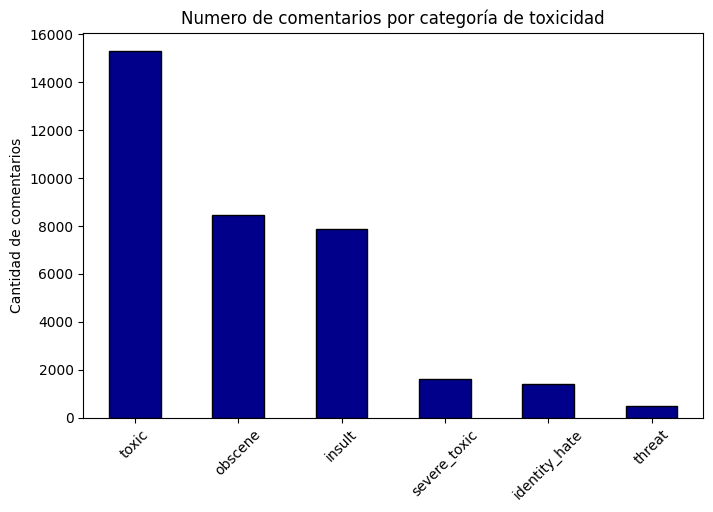
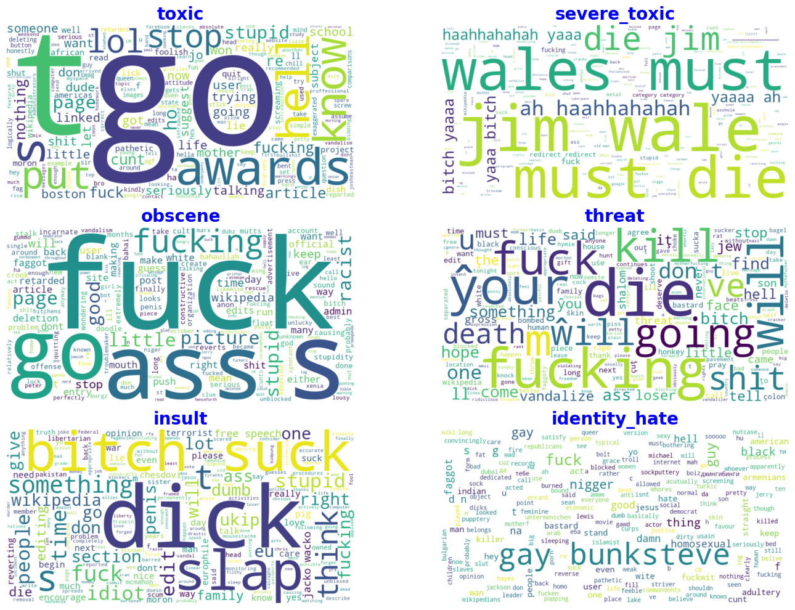

Las plataformas en línea enfrentan el desafío constante de moderar los comentarios de los usuarios para prevenir comportamientos dañinos o tóxicos. El objetivo de este proyecto es desarrollar un modelo de machine learning capaz de detectar y clasificar comentarios tóxicos. El dataset contiene comentarios etiquetados por evaluadores humanos con seis tipos de toxicidad: toxic, severe_toxic, obscene, threat, insult y identity_hate.
Este proyecto busca preprocesar los textos, construir un modelo predictivo y evaluar su desempeño, generando finalmente un archivo de envío con probabilidades predichas para cada tipo de toxicidad.
Desarrollar un modelo de machine learning capaz de detectar y clasificar comentarios tóxicos.
train.csv — Contiene 159,571 comentarios con sus etiquetas binarias para cada tipo de toxicidad.
test.csv — Contiene 153,164 comentarios para los cuales debemos predecir probabilidades.
Eliminar caracteres especiales, URLs, números y texto no inglés para reducir ruido:
Tokenización del texto en palabras para la extracción de características:
Se realizó un análisis exploratorio de los datos para comprender mejor la distribución y características de los comentarios. Se observaron aspectos como la longitud de los comentarios, la frecuencia de palabras y la distribución de las etiquetas de toxicidad.
Distribución de clases: Contando la cantidad de comentarios por tipo de toxicidad, observamos que algunas clases (severe_toxic y threat) son mucho más raras que otras (toxic o insult). Esto indica un desbalance de clases, que afecta el entrenamiento del modelo.
Comentarios de ejemplo: Revisar ejemplos aleatorios por clase nos ayudó a entender el tipo de lenguaje asociado con cada etiqueta de toxicidad.
Nubes de palabras: Visualizaciones de las palabras más frecuentes por clase muestran patrones y palabras clave típicas para cada tipo de comportamiento tóxico.
Se utilizaron técnicas de procesamiento de lenguaje natural (NLP) para convertir los comentarios en representaciones numéricas que el modelo pueda entender. Esto incluyó la vectorización de texto utilizando TF-IDF y la creación de n-gramas para capturar contexto.
Transformamos el texto en características numéricas usando TF-IDF, considerando unigramas y bigramas:
trn_term_doc = vec.fit_transform(df_train['comment_text'])
val_term_doc = vec.transform(valid['comment_text'])
test_term_doc = vec.transform(df_test['comment_text'])
Se entrenaron modelos de clasificación binaria independientes para cada tipo de toxicidad utilizando regresión logística. Se ajustaron los hiperparámetros mediante validación cruzada para optimizar el rendimiento del modelo.
Se implementó un clasificador Naive Bayes + Regresión Logística (NB-LR), que mejora la regresión logística usando razones logarítmicas de cuentas derivadas de la frecuencia de palabras por clase.